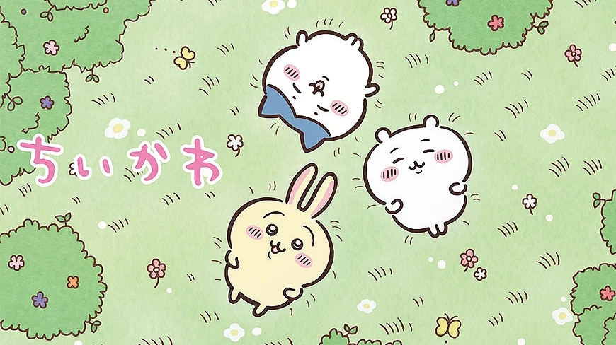

Chiikawa is a cute Japanese character created by Nagano in 2020. The story follows a small white creature and its friends as they face everyday challenges. They work by pulling weeds or fighting dangerous creatures to earn money for food and other necessities. Although Chiikawa looks adorable, the story explores serious themes such as hard work, financial struggles, friendship, and survival. It combines cheerful moments with unexpected challenges, making it relatable to many adult readers in Japan. Chiikawa first appeared as a short comic on X (formerly Twitter) on January 19, 2020. Its popularity led to manga publications and an anime adaptation in April 2022. The anime continues to attract fans around the world. What makes Chiikawa special is the contrast between its cute appearance and the realistic struggles of everyday life. It reminds readers of the importance of friendship, perseverance, and finding happiness in small moments.